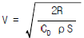
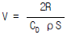
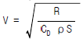
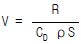
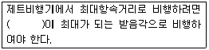
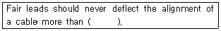
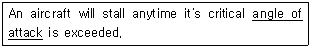
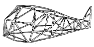

항공기체정비기능사 (2002-10-06 기출문제)
1과목: 비행원리
1. 겹날개 비행기와 홑날개 비행기를 비교할 때 겹날개 비행기의 특징이라고 볼 수 없는 것은?
- 조종성이 좋다.
- 착륙조작이 어렵다.
- 날개의 공기저항이 크다.
- 운동성이 좋다.
(정답률: 55%)

2. 균일한 속도로 빠르게 흐르는 공기의 흐름속에 평판의 앞전으로부터 생기는 경계층의 종류를 순서대로 맞게 배열한 것은?
- 층류 경계층 → 난류 경계층 → 천이 구역
- 난류 경계층 → 천이 구역 → 층류 경계층
- 층류 경계층 → 천이 구역 → 난류 경계층
- 천이 구역 → 층류 경계층 → 난류 경계층
(정답률: 78%)
3. 비행기가 공기중에서 R㎏의 저항을 받고 있다. 이때 비행속도 V를 구하는 식 중에서 가장 올바른 것은? (단, ρ : 공기밀도, S : 날개면적, CD : 항력계수이다.)




(정답률: 67%)
4. 날개 전체를 대표하는 시위는 어느 것인가?
- 공력시위
- 평균시위
- 공력평균시위
- 기하학적시위
(정답률: 50%)
5. 왕복기관을 장비한 프로펠러 비행기에서 제동마력에 프로펠러 효율을 곱한 마력은?
- 필요마력
- 이용마력
- 여유마력
- 실속마력
(정답률: 62%)
6. 다음 ( )안에 알맞는 말은?

- (양력계수)1/2/항력계수
- 양력계수/항력계수
- 양력계수 × 항력계수
- (양력계수)1/2 × 항력계수
(정답률: 34%)
7. 헬리콥터의 무게를W, 회전날개의 반지름을 R, 회전날개의 지름을 D, 그리고 추력을 T라고 할 때 회전면 하중D.L을 구하는 공식을 올바르게 나타낸 것은?
- W / (πR)
- T / (πR2)
- W / (πR2)
- T/ (πD)
(정답률: 66%)
8. 병렬식 회전날개 헬리콥터의 장점 사항으로 틀린 것은?
- 가로 안전성이 매우 좋다.
- 기체의 길이를 짧게 할 수 있다.
- 저속 수평비행시 추가양력을 발생시켜 준다.
- 수평비행시 유도손실이 적다.
(정답률: 42%)
9. 전자파를 흡수, 반사하는 작용을 하여 통신에 영향을 미치는 대기권은?
- 중간권
- 열권
- 성층권
- 극외권
(정답률: 72%)
10. 공기보다 무거운 항공기의 분류가 아닌 것은?
- 기구
- 비행기
- 활공기
- 헬리콥터
(정답률: 81%)
11. 조종사가 조종석에서 임의로 탭(Tab)의 위치를 조절 할 수 없는 탭(Tab)은?
- 서보탭(Servo tab)
- 고정탭(Fixed tab)
- 평형탭(Balance tab)
- 스프링탭(Spring tab)
(정답률: 76%)
12. 비행기의 기준축과 각축에 대한 회전 각운동에 대해 가장 올바르게 나타낸 것은?
- 세로축 - X축 - 옆놀이(Rolling)
- 세로축 - X축 - 키놀이(Pitching)
- 가로축 - Z축 - 옆놀이(Rolling)
- 가로축 - Z축 - 키놀이(Pitching)
(정답률: 74%)
13. 무게 6,000 kg인 비행기가 경사각 25° , 속도 200 km/h로 정상 선회를 하고 있을 때의 양력은 얼마인가? (단, sin25° =0.42, cos25° =0.90, tan25° =0.47 )
- 2,520 kg
- 6,667 kg
- 12,766 kg
- 14,286 kg
(정답률: 47%)
14. 항공기가 5,000 m의 고도를 360km/h로 비행하고 있다. 날개의 면적은 30m2이고, 항력계수는 0.03일 때 필요마력은 얼마인가? (단, 공기밀도는 0.075kg· s2 /m4)
- 3499 마력
- 58 마력
- 699 마력
- 450 마력
(정답률: 36%)
15. 비행기의 안정성 및 조종성과 관련하여 설명한 내용중 틀린 것은?
- 안정과 조종은 서로 상반되는 성질을 나타낸다.
- 정적 안정성이 클 수록 조종성은 증가된다.
- 안정성과 조종성 사이에는 적절한 조화를 유지하는 것이 필요하다.
- 정적 안정성이 작아지면 조종성은 증가되나, 평형을 유지시키기 위하여는 조종사에게 계속적인 주의를 요한다.
(정답률: 66%)
16. 대수리 작업에 속하지 않는 것은?
- 객실내 의자및 화장실 수리작업
- 특수한 시설 및 장비를 필요로 하는 작업
- 내부 부품의 복잡한 분해작업
- 예비품 검사대상 부품의 오버홀
(정답률: 75%)
17. 감항성 유지를 위한 점검 및 정기적인 부품교환등을 포함하는 정비작업으로 정시점검과 시한성 부품교환 등으로 구분되는 정비는?
- 계획 정비
- 개조정비
- 비 계획 정비
- 특별 정비
(정답률: 77%)
18. 마이크로미터를 좋은 상태로 유지하고 측정값의 정확도를 높이려면 다음의 사항을 주의해야 한다. 가장 관계가 먼 것은?
- 마이크로미터를 보관할 때 앤빌과 스핀들이 서로 맞닿게하여 흔들림을 방지해야 한다.
- 마이크로미터 스큐류는 불록 게이지를 사용하여 정기적으로 점검한다.
- 마이크로미터 기구에 이물질이 끼여 원활하지 못할 때는 이를 닦아낸다.
- 딤블을 잡고 프레임을 돌리면 스크류가 마멸되므로 주의한다.
(정답률: 75%)
19. 안전결선 작업을 신속하고 일관성있게 하는데 사용되는 공구로 가장 적합한 것은?
- Diagonal Cutter
- Wire Twister
- Slip joine plier
- Needle nose plier
(정답률: 81%)
20. 같은 열에있는 리벳의 중심과 인접한 리벳의 중심간의 거리를 무엇이라 하는가?
- 리벳피치
- 횡단피치
- 끝거리
- 가공거리
(정답률: 61%)
2과목: 항공기정비
21. 항공기 전기계통이 3상 회로일 경우 각상의 위치를 식별하기 위하여 색깔로 표시한다. A상에는 무슨색깔로 표시하는가?
- 황색
- 녹색
- 적색
- 청색
(정답률: 46%)
22. 항공기용 볼트의 그립(GRIP)길이는 어떻게 결정되는가?
- 볼트의 직경과 일치
- 볼트의 직경과 나사산의 수
- 체결해야 할 부재의 두께와 일치
- 볼트 전체길이에서 나사부분의 길이
(정답률: 45%)
23. 화학적 또는 전기화학적인 작용으로 인해서 금속이 퇴화되는 현상을 무엇이라 하는가?
- 알크래딩(Alcladding)
- 부식(Corrosion)
- 아노다이징(Anodizing)
- 알로다이징(Alodizing)
(정답률: 80%)
24. 다이첵크(Dye Penetrant)검사의 절차에서 사용되는 용어가 아닌 것은?
- 사전처리 세척
- 침투처리
- 유화처리
- 현미경 투시
(정답률: 73%)
25. 산소계통의 세척제 (OXYGEN SYSTEM CLEANER)로 가장 적합한 것은?
- 드라이크리닝솔벤트(DRY CLEANING SOLVENT)
- 메칠에칠 케톤(METHYL ETHYL KETONE)
- 염화불화 탄화수소와 이소프로필 알콜의 혼합물(CHLORINATED FLUORINATED HYDROCARBONS AND ISPROPYL ALCOHOL)
- 케로신(KEROSENE)
(정답률: 47%)
26. 연료탱크(FUEL TANK)의 연료누설상태 점검결과 런닝리크(RUNNING LEAK)상태로 나타났다. 어떻게 할 것인가?
- 계속 비행을 시킨다.
- 수리를 하지 않아도 된다.
- 비행을 중단시키고 수리하여야 한다.
- 누설부위가 WING TIP 부위이면 차기에 수리하여도 된다.
(정답률: 77%)
27. 항공기의 취급과 가장 관계가 먼 것은?
- 바퀴에 촉을 괴는 일
- 착륙장치에 안전핀을 꽂는 일
- 항공기를 이동시키기 위하여 견인하는 일
- 산소계통에 산소보급하는 일
(정답률: 68%)
28. 다음 ( )안에 알맞는 말은?

- 12°
- 8°
- 5°
- 3°
(정답률: 46%)
29. 밑줄친 부분을 의미하는 올바른 단어는?

- 실속각
- 스핀각
- 공격각
- 받음각
(정답률: 76%)
30. 자력선을 이용하여 재료표면이나 표면밑의 균열을 발견하는 검사방법은?
- 자분탐상 검사
- 형광 침투 탐상검사
- 초음파 검사
- 와전류 검사
(정답률: 57%)
31. 스크루 드라이버의 구성 내용이 아닌 것은?
- 생크(shank)
- 탱(tang)
- 핸들(handle)
- 팁(tip)
(정답률: 69%)
32. 작업자의 책임과 관계 없는 것은?
- 작업자는 작업시 반드시 규정과 절차를 준수해야 한다.
- 작업시 보호 장구가 필요할 때에는 반드시 보호 장구를 착용해야 한다.
- 작업장 및 주위 환경보다 자기가 하고 있는 작업에 몰두한다.
- 작업장의 상태를 청결히 하고 정리.정돈하여 사고의 잠재 요인을 제거하도록 노력한다.
(정답률: 87%)
33. CO2소화기와 CBM 소화기의 단점을 보완하여 새로 개발한 소화기는?
- 할론 소화기
- 포말 소화기
- 분말 소화기
- 중탄 소화기
(정답률: 65%)
34. 항공기 공장 정비와 운항 정비에 대하여 가장 올바르게 설명한 것은?
- 운항 정비는 항공기 장비품의 벤치체크도 담당한다.
- 공장 정비는 항공기 기체의 정시점검을 담당한다.
- 운항 정비는 항공기의 정시점검을 담당한다.
- 공장 정비는 기관, 기체, 및 장비의 공장 정비로 나눌 수 있다
(정답률: 46%)
35. 판재를 범핑 가공할 때 판재에 손상을 주지않고 충격을 가할 수 있는 망치(hammer)는?
- 볼핀(ball peen)해머
- 클로(claw)해머
- 보디(body)해머
- 맬릿(mallet)해머
(정답률: 72%)
36. 조종케이블 조절기(Control Cable Regulators)는 어떤 역활을 담당하는가?
- 같은 케이블 장력을 유지한다.
- 고온을 수정한다.
- 저온을 수정한다.
- 지상조절을 하는데 이용된다.
(정답률: 78%)
37. 나셀(NACELLE)의 역할을 가장 올바르게 설명한 것은?
- 기본적으로 항공기의 ENGINE을 지지 장착하기 위한것으로 추력(THRUST)하중을 항공기로 전달한다.
- 항공기의 착륙장치(LANDING GEAR)를 지지 수용한다.
- 보조날개를 지지하여 항공기의 선회를 도모한다.
- 동체와 날개의 연결부로 날개의 하중을 지지한다.
(정답률: 56%)
38. 여압식 동체에서 공기압력을 유지하기 위한 격벽판으로 사용되기도 하고, 동체가 비틀림에 의해 변형되는 것을 막아주는 동체의 부재는?
- 프레임(FRAME)
- 스트링거(STRINGER)
- 세로대(LONGERON)
- 벌크헤드(BULKHEAD)
(정답률: 61%)
39. 금속의 성질중 굽힘이나 변형이 거의 일어나지 않고 부서지는 성질을 무엇이라 하는가?
- 전성(Malleability)
- 연성(Ductility)
- 인성(Toughness)
- 취성(Brittleness)
(정답률: 77%)
40. 청동을 나타낸 것은?
- 구리 + 아연
- 구리 + 주석
- 구리 + 알루미늄
- 구리 + 망간
(정답률: 72%)
3과목: 항공기체
41. 고온으로 가열한 후 급속냉각시켜 경도를 높이는 방법을 무엇이라 하는가?
- 노오멀라이징
- 담금질
- 뜨임
- 풀림
(정답률: 78%)
42. 소성가공 중 용기(Container)에 넣고 압력을 주어 봉재, 판재,형재 등의 제품으로 가공하는 것을 무엇이라 하는가? (단, 날개보(Spar)의 가공에 많이 이용된다.)
- 압출가공
- 압연가공
- 프레스가공
- 인발가공
(정답률: 47%)
43. 알루미늄의 성질을 잘못 설명한 것은?
- 시효경화성이 없어서 성형 가공성이 좋다.
- 표면에 산화피막을 만든다.
- 전기 및 열의 양도체이다.
- 비자성체 이다.
(정답률: 67%)
44. 합금강이란 어느 것인가?
- Fe와 C의 합금
- 탄소강과 특수원소의 합금
- 비철금속과 특수원소의 합금
- 비자성체인 소결합금
(정답률: 62%)
45. 항공기의 실제 무게와는 관계가 없는 것은?
- 자기무게
- 최대무게
- 영연료무게
- 테어무게
(정답률: 69%)
46. 항공기가 출발하기위해 승객과 화물을 모두 탑재했을 때 무게 중심이 전방무게 중심 한계점을 벗어나게 되었다. 무게중심을 한계점 내로 이동시키기 위해 조치할 수 있는 사항은?
- 무게가 무거운 착륙장치를 제거한다.
- 밸러스트를 화물실에 임시로 설치한다.
- 화물을 이동시켜 균형을 유지한다.
- 무게가 무거운 착륙장치를 이동시켜 균형을 유지한다.
(정답률: 45%)
47. 재료의 시험에서 S-N 곡선을 사용하는 시험은?
- 피로시험
- 크리이프시험
- 항복시험
- 압축강도시험
(정답률: 52%)
48. 헬리콥터 기관에서 감속장치의 기본구조에 속하지 않는 것은?
- 드라이 기어
- 링 기어
- 선 기어
- 유성 기어
(정답률: 42%)
49. 헬리콥터의 주회전날개의 궤도점검방법이 아닌 것은?
- 검사막대에 의한 방법
- 광선반사에 의한 방법
- 정적평형장비를 이용한 방법
- 스트로보스코프를 이용한 방법
(정답률: 28%)
50. 그림의 동체구조형식은 무엇인가 ?

- 응력외피형
- 모노코크형
- 세미모노코크형
- 트러스형
(정답률: 76%)
51. 항공기 타이어의 구조에서 고무사이에 끼어 있는 강 와이어(Steel Wire)로써 패브릭(Fabric)으로 둘러싸여 있는 부분을 무엇이라 하는가?
- 채이퍼(Chafer)
- 비드(Bead)
- 트레드(Tread)
- 브레이커(Breakers)
(정답률: 61%)
52. 헬리콥터에 관한 설명중 잘못된 것은?
- 주회전날개를 회전시켜 양력과 추력을 발생시킨다.
- 꼬리회전날개의 회전과 더불어 비행방향을 결정한다.
- 2차원 공간에서 어느 방향으로도 곡선이동이 가능하다.
- 수직 이.착륙과 공중정지비행을 마음대로 할 수 있다.
(정답률: 67%)
53. 열경화성 수지가 아닌 것은?
- 페놀 수지
- 에폭시 수지(Epoxy Resin)
- 아크릴 수지
- 폴리우레탄 수지
(정답률: 37%)
54. 기둥(재질 AISI 1025)의 지름이 4㎝, 길이가 100㎝ 이다. 이 기둥의 한쪽 끝은 고정되어 있고, 다른 한쪽 끝은 자유단이다. 이 기둥의 세장비(Slenderness ratio)는?
- 80
- 100
- 120
- 150
(정답률: 51%)
55. 재료의 기계적 성질에서 후크의 법칙(Hooke's Law)에 관하여 바르게 설명한 것은?
- 일정한 탄성 범위내에서 대응하는 응력과 변형률이 서로 비례관계에 있다.
- 재료의 탄성계수는 동일재료에서도 다른 값을 가진다.
- 일정한 탄성범위 내에서 대응하는 응력과 변형률은 서로 반비례 관계에 있다.
- 재료의 탄성계수는 영률(Young's modulus)과는 다르다.
(정답률: 51%)
56. 헬리콥터에서 목재로 된 주회전 날개 깃의 끝에 있는 팁 포켓의 역할은?
- 깃의 궤도를 맞추는데 사용
- 깃 길이 방향의 평형을 맞추는데 사용
- 깃의 무게중심을 맞추는데 사용
- 진동을 감소시키는데 사용
(정답률: 34%)
57. 항공기 착륙장치와 가장 관계 깊은 밸브는?
- 릴리브 밸브(RELIEF VALVE)
- 선택밸브(SELECTOR VALVE)
- 우선밸브(PRIORITY VALVE)
- 시퀀스밸브(SEQUENCE VALVE)
(정답률: 31%)
58. 대형항공기에 일반적으로 사용되는 브레이크 형식은?
- 팽창튜브 브레이크
- 싱글 디스크 브레이크
- 멀티 디스크 브레이크
- 세크먼크 로터 브레이크
(정답률: 75%)
59. 일반적으로 기체구조의 설계에서 안전계수는 얼마인가?
- 1
- 1.5
- 2
- 2.5
(정답률: 61%)
60. 기둥에서 종종 일어나는 좌굴 현상에 의한 파괴의 설명 내용으로 가장 올바른 것은?
- 축 압축력에 의하여 굽힘이 되어 파괴되는 현상이다.
- 축 인장력에 의하여 굽힘이 되어 일어나는 현상이다.
- 축 압축력에 의하여 비틀림이 되어 파괴되는 현상이다.
- 축 인장력에 의하여 비틀림이 되어 일어나는 현상이다.
(정답률: 48%)